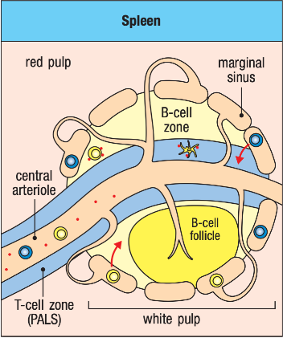
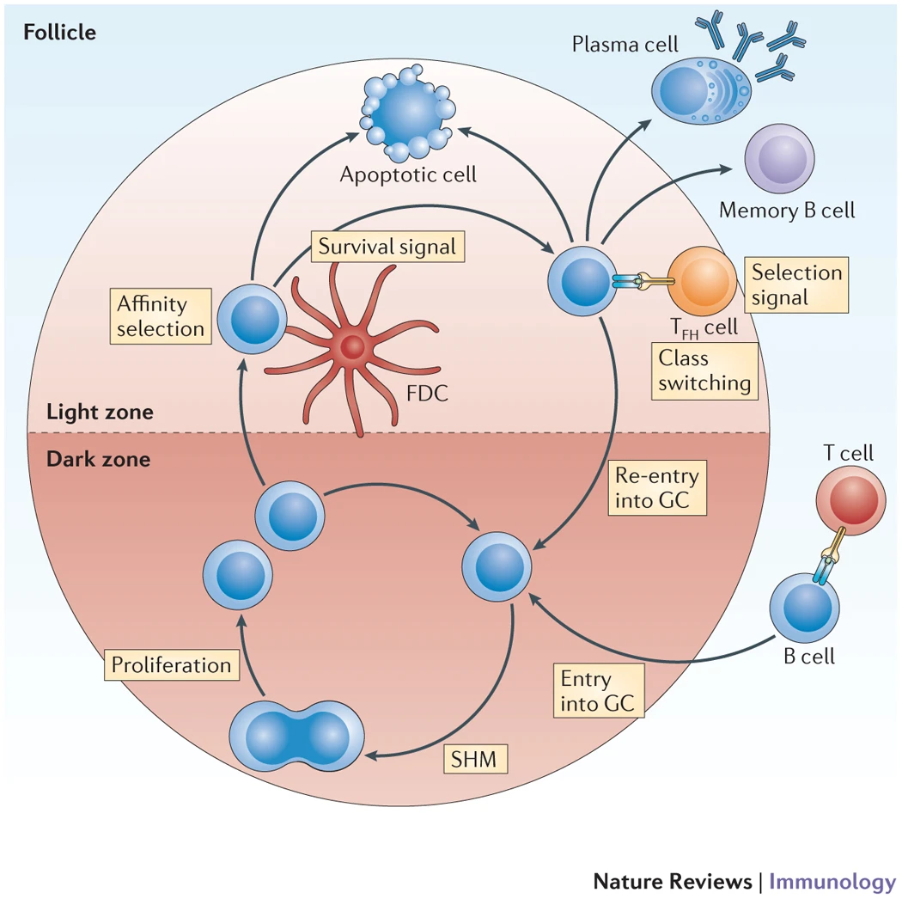
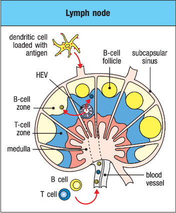
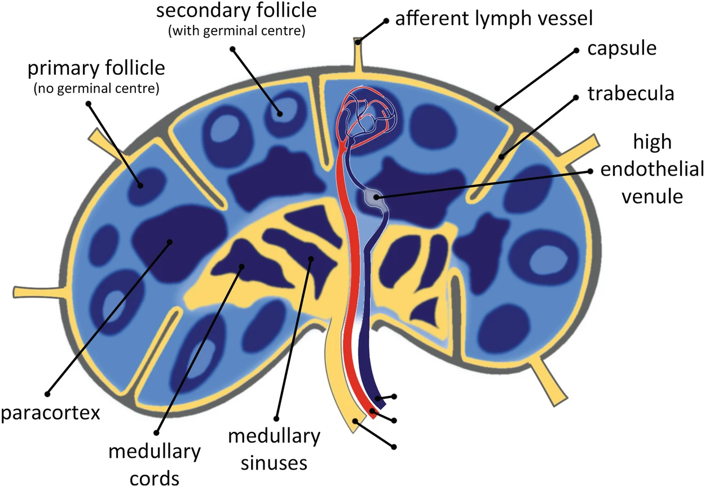
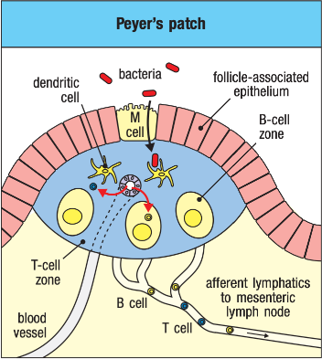
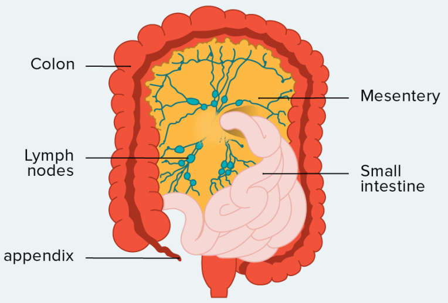
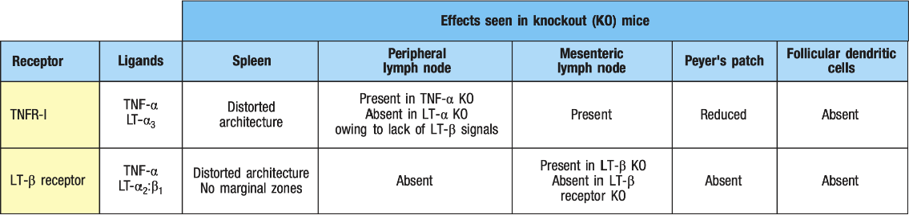

Chapter 9. T-cell-mediated immunity
Development and function of secondary lymphoid organs – sites for the initiation of adaptive immune responses
9-1. T and B lymphocytes are found in distinct locations in secondary lymphoid tissues (SLTs)
- Spleen
- only connected to blood, not to the lymphatics!
- The marginal sinus separates the white pulp from the red pulp
- The marginal sinus is made of blood vessels that branch from the central arteriole
- White pulp
- B-cell follicles
- B-cell follicles contain networks follicular DCs (FDCs) in the area of the follicle most distance from the central arteriole
- PALS
- PALS contain bone marrow-derived (i.e. typical DC lineage) interdigitating DCs, of which there are two main subtypes
- CD8+
- CD8-; (CD11b:CD18)+
- PALS contain bone marrow-derived (i.e. typical DC lineage) interdigitating DCs, of which there are two main subtypes
- B-cell follicles

Janeway’s Immunobiology (Figure 9-1)

Schematic of a B-cell follicle in the spleen. Follicular dendritic cells (FDCs) have long processes that can capture antigen in immune complexes (complexes of antigen, antibody, and complement).
(source: Heesters, B., Myers, R. & Carroll, M. Follicular dendritic cells: dynamic antigen libraries. Nat Rev Immunol 14, 495–504 (2014).)
- Lymph nodes
- connects to both lymphatics and blood
- B-cell follicles are located just under the outer capsule of the lymph node
- T-cell zones surround the follicles in paracortical areas
- lymph entering lymph nodes enter the subcapsular space (=marginal sinus)
- the lymph contains antigen and antigen-bearing DCs from the tissues
- T and B cells enter the lymph node via special blood vessels called high endothelial venules (HEVs), found in the T-cell zones


(source: Figure 9-1 from Janeway’s Immunobiology, 9th ed.; Michiel van den Brand, Hematopathology)
- Mucosa-associated lymphoid tissues (MALTs)
- Peyer’s patches are lymph node-like structures (contain both a T-cell zone and B-cell follicles)
- Peyer’s patches are interspersed beneath the gut epithelium
- M cells channel antigens and pathogens to the Peyer’s patches
- Peyer’s patches are lymph node-like structures (contain both a T-cell zone and B-cell follicles)

(source: Figure 9-1 from Janeway’s Immunobiology, 9th ed.)
9-2. The development of SLTs is controlled by lymphoid tissue inducer cells and proteins of the tumor necrosis factor family
- lymphatics develop from endothelial cells that originate in blood vessels
- said endothelial cells express Prox1 (homeobox transcription factor) \(\to\) endothelial cells bud from vein, migrate away, and reassociate to form a parallel network of lymphatic vessels
- as lymphatics form, hematopoietic cells called lymphoid tissue inducer (LTi) cells are formed in the fetal liver and travel via the bloodstream to propspective lymph nodes and Peyer’s patches
- LTi cells produce TNF cytokines (and others) which recruit lymphoid cells to form the lymph nodes
- lymphotoxins (LTs) \(\in\) TNF-family cytokines; different lymph nodes depend on signals from different LTs
- LT-\(\alpha_3\). cervical and mesenteric lymph nodes
- LT-\(\alpha_2\):\(\beta\) (often referred to as just LT-\(\beta\)). all other lymph nodes; also involved in developing the Peyer’s patches
- LTi cells express LT-\(\beta\) \(\to\) LT-\(\beta\) activates non-canonical NFkB pathway in stromal cells
- \(\to\) stromal cells express adhesion molecules
- \(\to\) stromal cells express chemokines such as CXCL13 (=B-lymphocyte cytokine, BLC)

The mesentery is a fold of membrane that attaches the intestine to the abdominal wall and holds it in place. (Source: Healthline)
